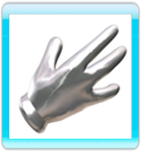

El mando de Wii
 Todas las acciones de este juego se realizan con el mando de Wii.
Moviéndolo, el cursor se desplazará por la pantalla, indicando al jugador las diferentes
opciones de juego.
Todas las acciones de este juego se realizan con el mando de Wii.
Moviéndolo, el cursor se desplazará por la pantalla, indicando al jugador las diferentes
opciones de juego.
El cursor tiene cuatro iconos diferentes, que representan las distintas
acciones que se pueden realizar.
IR
 El primer icono es un simple puntero, que sólo sirve para ir
al lugar donde este apunta, un lugar impreciso de una habitación, de una calle o
de un campo. Para ir a determinados lugares, el icono se convertirá en una flecha,
y habrá que pulsar el Botón A.
El primer icono es un simple puntero, que sólo sirve para ir
al lugar donde este apunta, un lugar impreciso de una habitación, de una calle o
de un campo. Para ir a determinados lugares, el icono se convertirá en una flecha,
y habrá que pulsar el Botón A.
MIRAR
 El segundo incono es la lupa, que sólo aparece sobre objetos y
personajes predeterminados. La lupa sirve para mirar las cosas, y al pulsar el Botón A, Fenimore se acerca a lo que se desea observar y la vista pasa a una cámara
subjetiva que permite al jugador ver con más detalle lo que le interesa. Por ejemplo,
si el icono de la lupa está sobre un cajón abierto, y se pulsa el Botón A, se podrá ver
lo que hay en su interior.
El segundo incono es la lupa, que sólo aparece sobre objetos y
personajes predeterminados. La lupa sirve para mirar las cosas, y al pulsar el Botón A, Fenimore se acerca a lo que se desea observar y la vista pasa a una cámara
subjetiva que permite al jugador ver con más detalle lo que le interesa. Por ejemplo,
si el icono de la lupa está sobre un cajón abierto, y se pulsa el Botón A, se podrá ver
lo que hay en su interior.
USAR
El tercer icono es la mano, que sirve para interactuar con los
objetos que hay en la pantalla. Por ejemplo, sobre una puerta, la mano indicará
que se puede abrir, sobre un cubo, que se puede agarrar, y sobre el caballo, que
se puede montar.
HABLAR
El cuarto icono es el bocadillo, que sólo sirve para hablar, y
que por tanto, sólo aparece sobre los distintos personajes. Una vez iniciada
la conversación, aparecerán las diferentes opciones de charla en el lado derecho
de la pantalla, representadas por caras. Además, habrá una opción de salida de la
conversación, marcada por una flecha, y en ocasiones, se podrá seleccionar una
carpeta para empezar a hablar de un tema determinado.
ROTAR ICONOS
Para cambiar de un icono a otro, por ejemplo, de la lupa a la mano o al bocadillo, hay que pulsar
el Botón B. Cuando el cursor está sobre un objeto determinado,
cuyo nombre aparecerá escrito en la barra de órdenes (la banda negra en la parte
baja de la pantalla), y se pulsa el Botón B, se puede cambiar de
la lupa, que sirve para inspeccionar dicho objeto, a la mano, que sirve bien para
accionarlo o bien para agarrarlo.